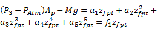
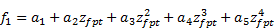
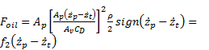
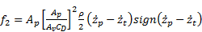
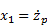
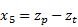
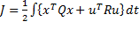
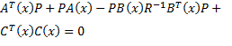

Journal of Automation and Control Research (JACR)
ISSN: 2368-6677

Volume 1, Year 2014 - Pages 1-10
DOI: 10.11159/jacr.2014.001
Alternative Vision Approach to Ground Vehicle Detection System Utilizing Single Board Computer (SBC) for Motor Control
Nurul Izzati Mohd. Saleh, Md. Farhan Aizuddin, Wan Rahiman
Universiti Sains Malaysia Engineering Campus, School of Electrical & Electronic Engineering
Seberang Perai Selatan, Nibong Tebal, Pulau Pinang, 14300, Malaysia
nims14_eee041@student.usm.my; michael3a10@gmail.com; wanrahiman@usm.my
Abstract - This paper presented an alternative approach for ground vehicle identification for vehicle following. The vision system is tested for its feasibility in image processing on a limited resources platform. The limited resources platform consists of off-the-shelf webcam as vision sensor, single board computer (SBC) as its main hardware and a microcontroller as a sensor board. The image processing library used for image processing is OpenCV, an open source library. For optimization purposes Design of Experiment (DOE) is used to determine the factors that contribute to the accuracy of the vehicle identification. This system is then attached serially to ultrasonic sensor in order to demonstrate the safety system for the follower vehicle. The experimental results reveal that the approach under limited resources platform is able to identify the needed features to indicate presence of a ground vehicle to some extent. The paper also highlights the limitations of the system which may be addressed in future works.
Keywords: Ground vehicle; Autonomous vehicle; Vision system; Median filter; OpenCV.
© Copyright 2015 Authors This is an Open Access article published under the Creative Commons Attribution License terms. Unrestricted use, distribution, and reproduction in any medium are permitted, provided the original work is properly cited.
Date Received: 2015-05-24
Date Accepted: 2015-11-09
Date Published: TBA
1. Introduction
Road injuries and fatalities are a growing concern in Malaysia. There has been an increase in the number of deaths due to road accidents from 6,286 deaths in 2003 to 6,917 in 2012. From the fatality distribution by mode of transport chart, fatalities caused by car as the mode of transport made up 22 % from the overall chosen modes [1].
In urban driving environment, accidents or collisions especially in traffic congestion scenario usually occur due to human error such as misjudged distance, loss of control, poor manoeuvring and sudden braking. Drivers sometimes misjudge the distance between their cars and the vehicles in front of them during traffic jams such as rush hour or road congestion due to road works, resulting in collisions when the vehicles in front apply the brakes without warning. Therefore, there is a need for a robust vision system to allow ground vehicles to detect the presence of vehicle in front of them.
This paper focuses on urban driving scenario where accidents involving motorized vehicles often happen during traffic congestion for example, during peak hours. A webcam-based approach to identify whether a ground vehicle is present in front of the autonomous vehicle is proposed in this study.
2. Related Work
Existing works in the research and development of visual guidance technology can be categorized into two major categories: Unmanned Ground Vehicles (UGVs) and Intelligent Transport Systems (ITSs) [2]. UGVs study deal with off-road navigation and terrain mapping [3]. ITS study on the other hand, is concentrated more on efficient transport in structured or urban settings. There are several roles that can be assigned to the vision system which are detection and following of a road [4], detection of obstacles , detection and tracking of other vehicles and detection and identification of landmarks [5].
2.1. Imaging System
There are two types of imaging system, active and passive system. The related review discussed will be focusing on the latter system. In order to obtain good quality data input to guidance algorithm there are several considerations to be taken in choosing the cameras for passive imaging in outdoor environments [2].
One of the common image acquisition methods that can be used is through passive camera system [4]. Camera peripheral are often chosen due to their availability, and the resolution can be varied to suit the needs. With multiple inputs of images from different sides of the vehicle obtained from more than one camera, an algorithm was designed by computing a maximum value of every row for every field and the average of these maximum values of the five fields was then used as the threshold value of each row after integral compensation. The formulae are generated after a few repetitive experiments. This method is reported by [4] to be lacking in terms of its robustness towards different types of conditions and illumination.
Other method of image acquisition that can be utilized is by using stereovision camera [3], [5], [6]. Stereovision-based distance measurement provides reasonably good accuracy for objects within a short distant range. However, due to the reported matching ambiguity, quantization errors and inaccurate parameters of the camera model from various sources by [6], this method has poor accuracy for objects at long distance. Thus further processing is needed in order to compensate for these shortcomings.
2. 2. Image Processing
Morphological operation in image processing context is the means for obtaining image components that are functional in characterizing and describing the shape region such as boundaries, skeleton and convex hull [7]. Morphological operations are usually performed on binary images. There are two morphological operations that are considered which are dilation and erosion.
Dilation is a morphological operation that thickens or expands the white region. Dilation is useful when the region of interest (ROI) is too small for further processing or when there are broken parts that need to be joined as an object. Erosion on the other hand is a morphological operation that removes excessive white pixels. Erosion is useful for removing small white noises or separating two connected regions [8].
In order to remove smaller detected regions usually due to noise, and to enlarge the areas of object of interests, sequence of erode and dilate operation are involved in the morphological operation where the effect is, and to close any holes within them.
2. 3. Feature Extraction
One of the feature extraction methods covered in this literature review is by using Scale Invariant Feature Transform (SIFT) [5]. SIFT is a method for extracting distinctive invariant features from images that can be used to perform reliable matching between different views of an object or scene. However, to implement this method, it requires a lot of processing resources. To reduce the SIFT computational time, Self-Organizing Map (SOM) is used to improve the matching process [5].
There are also other key-point descriptors that are available such as BRISK, SURF and BRIEF.
Another method is to detect the outer contours or edge of the object of interest [3]. For image processing, the algorithm can be designed by importing the relevant libraries from OpenCV. OpenCV (Open Source Computer Vision Library) is a computer vision and machine learning software library. It is developed as an open source and used as an alternative to MATLAB, and serves to provide foundation for computer vision purposes and function aid of the use of machine perception in the commercial products [9].
To date, OpenCV provides the library for the feature extraction method discussed (SIFT, SURF, BRIEF and BRISK); to name a few.
For this project, the vision system utilizes passive monocular camera which only focuses on image processing.
3. Methodology
The proposed method provides an alternative approach from the related works reviewed. While there are a lot of state-of-the-art method that can be utilized this method is proposed as a solution to be implemented to a single board computer (SBC) as it is simple and computationally inexpensive in comparison to the other method. Figure 1 shows the proposed system block diagram. The system will be installed on a Remote Controlled (RC) car which serves as the prototype for an autonomous vehicle. The installed webcam will be streaming continuously and the video feed will be fed into SBC to process with the aid of OpenCV libraries.
Figure 2 shows the overall flowchart for the image processing. The image processing is performed fully with the aid of OpenCV built-in libraries.

3. 1. Image Acquisition
The webcam chosen has CMOS type sensor with 2 mm focal length. The chosen webcam has flexible hinge so that the elevation angle could be adjusted. The image is acquired form the video streaming feed and fed directly into microprocessor.
3. 2. Image Segmentation
The initial RGB colour space input from the webcam was converted to HSV colour space. The camera would look for pixel with the same Hue (H), Saturation (S) and Value (V) range in order to detect the rear view of the lead vehicle. The region of interest (ROI) was converted to white whereas the rest was converted to black. The outer corner of the contour was for subsequent operation. Figure 3 shows the segmented image.

3. 3. Image Filtering
In order to reduce noise, a median filter was used. The median filter in OpenCV library uses Eq. 1 and replaces value in a square (represented by matrix value) neighbourhood around the centre pixel with its corresponding median value. Figure 4 shows the result of applying median filter to the segmented image.
Since the processing was done in real time the lighting (though barely noticeable) changed frequently. Simple blurring by using average filter was not as effective since it was highly affected by noisy images. Large difference in pixel points could cause a noticeable movement in the average value. It might cause the region of the noise to expand. Median filtering however was able to ignore the outliers by selecting the middle points [10].

3. 4. Morphological Operation
This operation was performed to correct the imperfections caused by the segmented images. Closing was the result of dilating the image followed by erosion. Fig. 5 shows the subsequent closing morphological operation done on the image.

3. 5. Feature Extraction
From the extracted contour information, bounding box can be traced. The visual representation is shown in Figure 6 to show characteristic of the bounding box whereas Figure 7 shows the final result. This function draws a rectangle box that bounds the contour. If there are several regions that have been segmented, the algorithm is designed to look out for the maximum width and height of the contour and draw out the bounding box. The formula used to determine the maximum bounding box is depicted in Eq. 2 – 3 where is the width of the detected contour(s) and  is the height of the contour(s). Meanwhile,  and  is the starting point of the detected edge of the contour(s) whereas  and  is the end point of the detected edge of the contour(s) alongside the x-axis and y-axis.

In this case, the resolution of the camera had been set, therefore the pixel limit for width and height depicted by  and is shown in Eq. 4.

3. 7. Sensor Integration
In order to gauge the distance between lead vehicle and follower vehicle sensor is used. The sensor used is ultrasonic sensor. This sensor will be integrated to the system.
Once the vehicle is detected, SBC will prompt sensor board to gauge the distance. A microcontroller is used to get values from ultrasonic sensor and convert it into readable entity to be relayed back to SBC serially. SBC will decide the action of the motor of the RC car through Case 1, 2 and 3(represented in equation (5)).
Figure 8 shows the flowchart for the decision making for motor control. If the distance is too far (case 1) the follower vehicle will accelerate. If the distance is too near (case 2) the follower vehicle will stop. If the distance is ideal (case 3) the follower vehicle will maintain its speed.
3. 8. Optimization using Design of Experiment (DOE)
In order to determine the factors that contribute to the accuracy of the vehicle detection, an experiment was performed. The experiment utilized 23 factorial experimental methods. This method is useful as it provides the smallest number of trial runs (in this case 23 = 8 trials) [11]. The factors that were tested are; camera elevation angles (the degree of the way camera is positioned), environment lighting conditions, and the distance between the lead vehicle and the following vehicle. For each factor there are 2 levels, arbitrarily indicated as low (-1) and high (1). Table 1 shows the selection factors and its respective levels. These levels were selected based on the initial pilot test that had been performed. These levels however, are not robust to other kind of webcam as the levels were tested exclusively based on the webcam’s specification. The trials were tested on a completely randomized order with a total of 3 replicates. This was done to ensure that each trial has an equal chance of being affected by extraneous factors. Extraneous factor may affect the responses of the trials between replicates and within replicates.

Table 1. Selection of Factors and Levels.
| Factors | Levels | |
| -1 | 1 | |
| Factor A: Camera elevation angle | 20° | 10° |
| Factor B: Lighting | Dim | Bright |
| Factor C: Distance | 0.5m | 1.0m |
The design matrix for the 23 factorial adapted from [11] is shown in Table 2.
Table 2. Design Matrix.
| Trial | A | B | C |
| 1 | -1 | -1 | -1 |
| 2 | 1 | -1 | -1 |
| 3 | -1 | 1 | -1 |
| 4 | 1 | 1 | -1 |
| 5 | -1 | -1 | 1 |
| 6 | 1 | -1 | 1 |
| 7 | -1 | 1 | 1 |
| 8 | 1 | 1 | 1 |
The response selected for this experiment is the accuracy factor between the measured area and the determined area (from pilot test). From the accuracy factor, the error can be determined. The formulae are depicted in Eq. 5-7. The data is then tabulated and analyzed using Minitab, a statistical software tool.
4. Results and Discussion
4. 1. Vehicle Detection
Initial test results under normal and bright lighting show a lot of false positives. It is observed that the algorithm could not segment the desirable colors because the selected pre-set values of HSV could not discriminate the desirable color range due to the increase in brightness. The problem lies within the minimum and maximum range of V as it is dependent on the lightness and darkness of image produced. Once the appropriate V values range are set the system is tested for optimization.
4. 2. Sensor Integration
Once integrated with the system, it is run for 30 trials to get the processing time each for 1 cycle of operation (vehicle detection to decision making) [11]. Table 3 shows the descriptive statistics of the processing time.
Table 3. Descriptive Statistics.
| Variable | Mean | Minimum | Maximum |
| Time(s) | 0.26025 | 0.21077 | 0.33039 |
The mean processing time is observed to be 0.26s, with the corresponding minimum and maximum time of 0.21s and 0.33s respectively. This is considered satisfactory considering that the system is run under resources-limited platform.
4. 3. DOE Optimization Result
The estimated effects and Coefficients for error table generated from Minitab is shown in Table 3 (some values were omitted as the value of interest is just the p-value). Error in this case is the error for the system to detect the lead vehicle accurately. is the probability that quantifies the strength of the evidence against the null hypothesis in favor of the alternate hypothesis. Table 5 shows the and its respective description.
Table 4. Estimated Effects and Coefficients for Error.
| Term | P |
| Constant | 0.000 |
| A: Camera Angle | 0.000 |
| B: Illumination | 0.777 |
| C: Distance | 0.001 |
| A: Camera Angle*B: Illumination | 0.265 |
| A: Camera Angle*C: Distance | 0.001 |
| B: Illumination*C: Distance | 0.067 |
| A: Camera Angle*B: Illumination* C: Distance | 0.002 |
From Table 4, it is observed that Factor A, Factor C, Factor AC and Factor ABC have the least p-value. Based on Table 5, it can be deduced that these factors have strong evidence against the null hypothesis in favor of the alternate hypothesis. In other words, these factors have highly significant effect to the contribution of the error. Factor BC on the other hand, has weak evidence against the null hypothesis in favor of alternate hypothesis, which means that the factor has low effect to the contribution of error. Finally Factor B and Factor AB shows no evidence against the null hypothesis in favor of the alternate hypothesis, which means that they did not contribute to the error.
In order to analyze the best combination of factors with the least error, a cube plot is generated as shown in Figure 8. From the cube plot it is observed that the error  obtained is at a satisfactory level. In exception of the (camera angle at 10°, bright illumination and 0.5m distance) , (camera angle at 10° , bright illumination and 1.0 m distance) and (camera angle at 10°, dim illumination and 1.0m distance ) with error of 0.3,0.5 and 0.9 respectively the rest is minimal. Therefore it can also be said that the best camera (elevation) angle is at 20° regardless of the illumination and distance level (based from the tested condition).
Table 5. Description for the respective  [11].
| p-values | Description |
| p>0.10 | No evidence against the null hypothesis in favour of the alternate hypothesis |
| 0.05<p<0.10 | Weak evidence against the null hypothesis in favour of alternate hypothesis |
| 0.01<p<0.05 | Moderate evidence against the null hypothesis in favour of alternate hypothesis |
| p<0.01 | Strong evidence against the null hypothesis in favour of alternate hypothesis |

5. Conclusions
Based on the result of the 23 factorial experiments the significant factors could be determined. It was concluded that the errors were minimal. The experiment also showed that the system is robust towards different illumination levels. However, there are also several limitations that need to be addressed for future improvement. One of them is the possible illumination glare due to very bright sunlight condition that may interfere with image segmentation, and another is when the distance exceeds the tested values as the system (and OpenCV libraries) may not have sufficient minimum data to detect the contour area which may result in the failure of the system to detect the lead vehicle totally.
Acknowledgement
The authors express their sincere thanks to the reviewers for their significant contributions to the improvement of the final paper. This research was supported by Development of Sustainable Platform for Land, Air and Naval (SPALAN) System Grant. (Grant number: 1001/PELECT/814170).
References
[1] N. Abdul Rahman, "Road Safety Situation In Malaysia," 2013. [Online]. Available: http://www.unece.org/fileadmin/DAM/trans/doc/2013/wp1/newdelhi/Malaysia.pdf. [Accessed 22 September 2014]. View Article
[2] A. Shacklock, X. Jian and W. Han, "Visual Guidance for Autonomous Vehicles: Capability and Challenges," in Autonomous Mobile Robots: Sensing, Control, Decision Making and Applications, Florida, CRC Press, 2006, pp. 6-40. View Book
[3] R. L. Klaser, F. S. Osorio and D. F. Wolf, "Simulation of an Autonomous Vehicle with a Vision-Based Navigation System in Unstructured Terrains Using OctoMap," in 2013 III Brazilian Symposium on Computing Systems Engineering (SBESC), Niterói, 2013. View Article
[4] M. Huang, R. Zhang, Y. Ma and Q. Yan, "Research on Autonomous Driving Control Method of Intelligent Vehicle Based on Vision Navigation," in 2010 International Conference on Computational Intelligence and Software Engineering, Wuhan, 2010. View Article
[5] K. Sharma, K. Jeong and S. Kim, "Vision based autonomous vehicle navigation with self-organizing map feature matching technique," in 11th International Conference on Control, Automation and Systems (ICCAS), Gyeonggi-do, 2011. View Article
[6] Z. Khalid, E.-A. Mohamed and M. Abdenbi, "Stereo vision-based road obstacles detection," in 8th International Conference on Intelligent Systems: Theories and Applications (SITA), Rabat, 2013. View Article
[7] R. Gonzalez and R. Woods, Digital Image Processing, 3rd ed., Prentice Hall, 2007. View Book
[8] A. Mordvintsev and A. K. Rahman, "OpenCV-Python Tutorials Documentation," 3 February 2014. [Online]. Available: http://www.scribd.com/doc/218973725/Opencv-Python-Tutroals#scribd. View Article
[9] itseez, "About OpenCV," 2015. [Online]. Available: http://opencv.org/about.html. [Accessed 18 October 2014]. View Article
[10] G. Bradski and A. Kaehler, Learning OpenCV, 1st ed., O'Reilly, 2008. View Book
[11] D. C. Montgomery, Design and Analysis of Experiments International Student Version, 8th ed., Singapore: John Wiley & Sons, 2013. View Book